Information about m. Hoverla
Hoverla is the highest peak of the Ukrainian Carpathians and the highest point of Ukraine, the height of which is 2,061 m above sea level. Located in the mountain range of Chornohora, on the border of the Yaremche district council of
Ivano-Frankivsk region and Rakhiv district of the Transcarpathian region, 17 kilometers from the border with Romania.
Since 1990, July 16, on the day of the adoption of the Declaration on the State Sovereignty of Ukraine, public organizations traditionally raise the State Flag of Ukraine on top of Hoverla, in particular, as part of the "Flag to the Summit!" Campaign.
On the occasion of the 5th anniversary of the Independence Day of Ukraine on Hoverla there is a plate with built-in capsules with ground from all regions of Ukraine.
m. Hoverla a popular summer and winter tourism destination. The first tourist route from climb to the summit was opened in 1880. In winter, the climbing climb to Hoverla is assigned category 1B. At the end of March, every year, starting
in 1964, "Hoverlyana" - a traditional mass hike-ride to the city of Hoverla - is taking place, dedicated to the opening of the sporty summer season in Lviv region and the memory of the dead mountaineers and tourists.
Information about event to m. Hoverla
Duration : 2 day
We invite you to climb the highest in Ukraine, as well as see fantastic mountain landscapes, waterfalls!
Day 1: departure from Lviv (08:00) - Rohatyn (church overview) - Yaremche (review of the waterfall, restaurant Hutsulshchina, souvenirs and lunch) - Bukovel (climbing a cable carriageway to the top of Bukovel Mountain and an overview of the Carpathian panorama) - Polyanytsya (settlement in hotel at 19:30, Hutsul fun).
Day 2: breakfast and departure (08:00) - sports center "Zaroslyak" (preparation for climbing, pike to Hoverla, snack on the top, lunch and dinner) - Lviv (return at 23:30).
Price - 950 UAH


 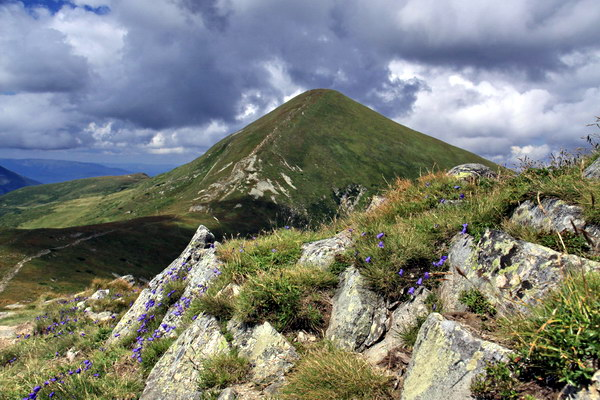
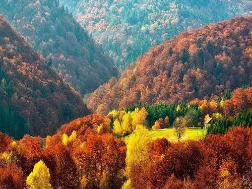
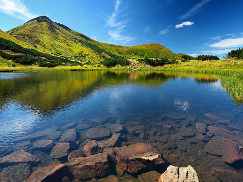
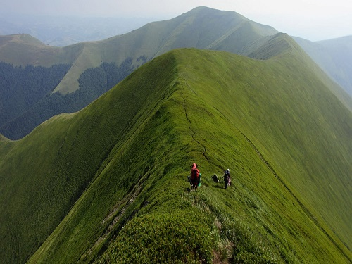
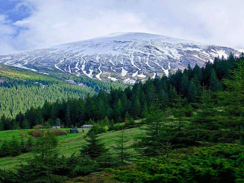
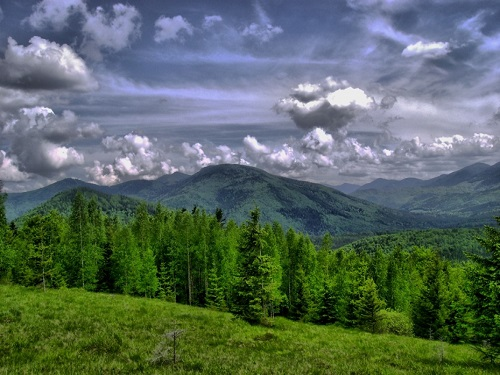
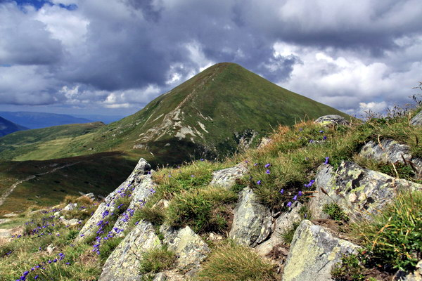
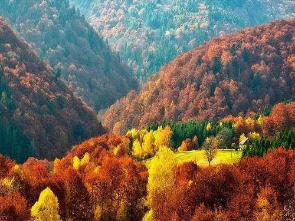
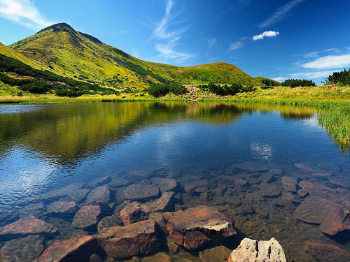
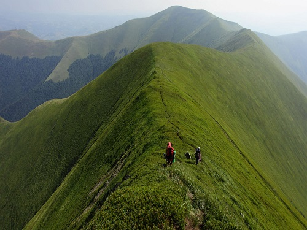
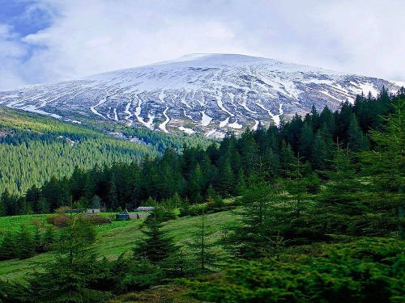
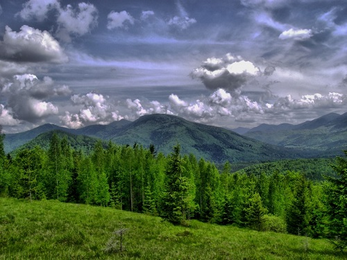